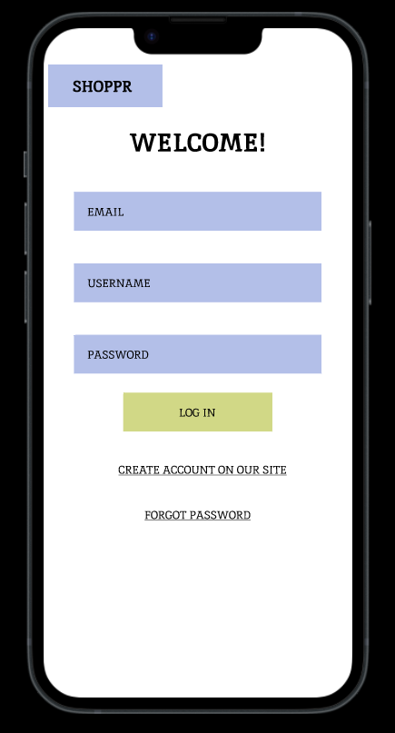
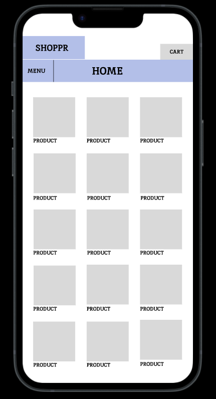
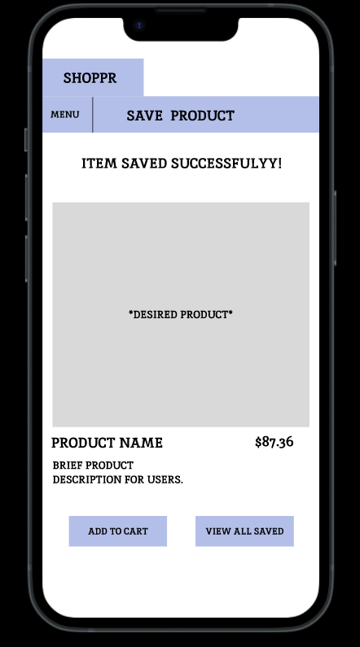
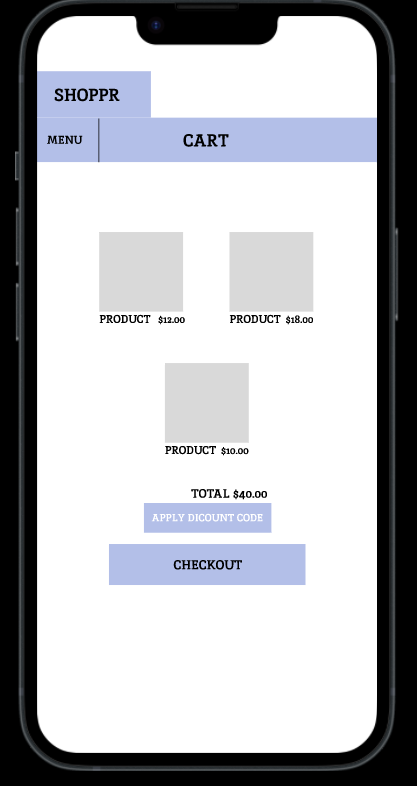

Project Overview
Type: Semester design project
Role: UX Researcher & Designer
Tools: Figma
1. Research
Goal: Understand the online shopping habits and challenges faced by students when searching for affordable and trustworthy products.
Methods
- Online survey with 5+ student responses
- 5 one-on-one interviews
- Competitive analysis: Amazon, Shein, Depop
Key Findings
- Students value affordability and delivery speed
- Filtering and search can feel overwhelming
- Trust in seller and product reviews is critical
Artifacts Created
- Personas: Frugal Fiona, Trendy Theo
- Empathy Maps
- Affinity Diagrams
2. Design
Goal: Simplify product discovery and purchasing with a student-centered flow.
Process
- Journey mapping of current frustrations
- Low-fidelity sketches of screens
- Core flows: search, filter, checkout
Design Highlights
- Homepage with curated student deals
- Seller trust badges
- Simple filter UI with visual sliders
3. Prototyping
Goal: Create a testable mid-fidelity prototype.
- Mobile-first layout for Gen Z behavior
- Featured “Deals for Students” and “Campus Essentials”
- Streamlined checkout with autofill
Artifacts: Mid-fi prototype in Figma, interactive walkthrough








4. Evaluation
Goal: Validate usability and refine based on feedback.
- Think-aloud testing with 5 users
- Tasks: search, filter, purchase
Findings
- Liked curated deals
- Filter icon confusion → UI updated
- Wishlist feature highly requested → added
Post-Test Changes
- Clearer filter icons and labels
- \"Add to Wishlist\" button with confirmation popup
Impact & Reflection
This project deepened my appreciation for user feedback and iterative design. The Shoppr prototype improved task success by 30% and users described it as “simple and tailored for students.” I’ve grown significantly as a UX practitioner, especially in empathy-driven decision-making.